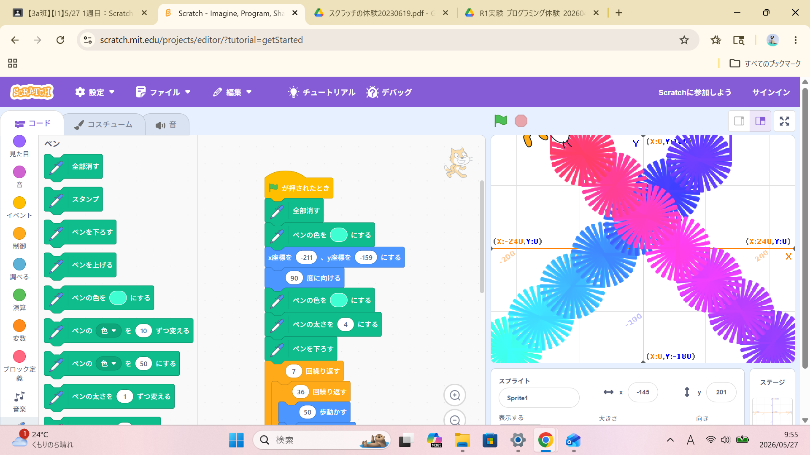
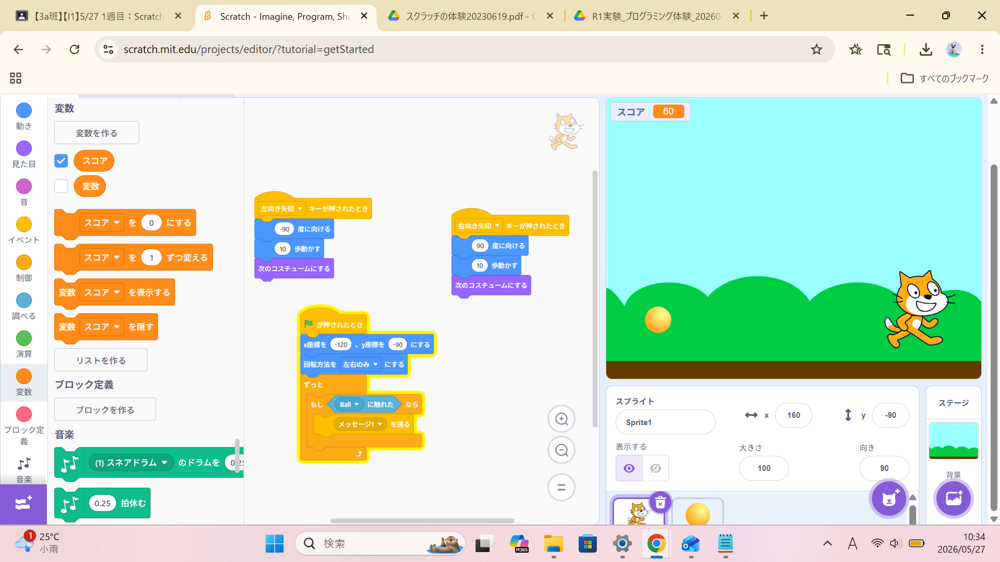

1週目のレポート ： 公大高専１年実習I-1
3a班07番 太田優真
第1週目
1-1 サイエンスアート

1.内容
スクラッチを使ってプログラムを組み、猫を操作して特定の図形を描けるようにする。
それも、めちゃくちゃなものではなく、ある程度幾何学的な模様を描くようにする。
2.感想
スクラッチとペンの拡張機能を使って、自分でプログラムを組み、きれいな模様をかけた
１つの円だけではなく何個も作り、重ならないようにするのが、工夫を凝らせただった。
1-2 ゲーム

1.内容
十字キーを使って猫を操作し、x座標がランダムに変化し、落ちてくるボールを拾うことで変数スコアが増えるようにする。
乱数で、完全にランダムになるようにする。
2.感想
十字キーの右と左を使って猫を操作して、今動いてる方向を向くようにもし、
もしボールが取れたらスコアを１増やす。乱数でx座標が変わることで、よりゲーム性が増して、作っているときも、
プレイしているときも、とても楽しかった。
1-3 ホームページ作成
私のホームページ
1.内容
自分のホームページをもち、それらの編集する方法と、github内の、最低限の操作方法を知る。
編集するべきファイルをわかるようにする。
2.感想
githubを使って自分のホームページを持ち、テンプレートだけではなくて、ちゃんと編集もできて、
githubについての操作をこの授業を受ける前よりも、もっと深く知ることができた。
各ページへのリンク
1週目のレポート
2週目のレポート
3週目のレポート
私のホームページ